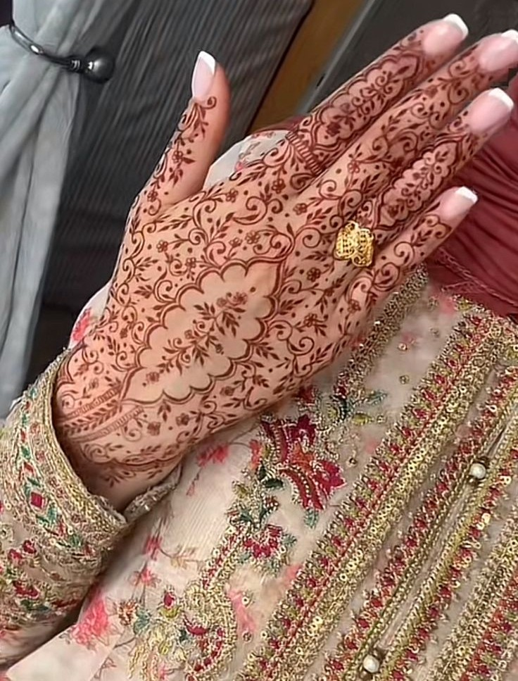
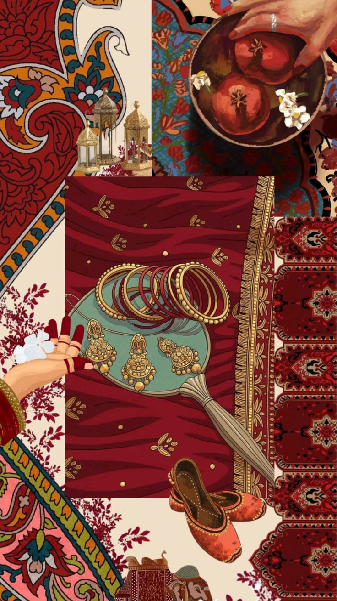

In mijn kunstautobiografie beschreef ik kunst als iets dat vooral draait om schoonheid, expressie en het overbrengen van emoties. Ik zag kunst toen vooral als iets dat je in een museum ziet of als iets wat gemaakt wordt om bewonderd te worden. Kunst was voor mij in die fase vooral iets bijzonders en esthetisch, iets dat losstaat van het dagelijks leven en vooral bedoeld is om gevoelens of ideeën van een maker zichtbaar te maken.
Nu is mijn definitie van kunst veel breder geworden. Kunst is voor mij alles wat bewust is gemaakt om iets over te brengen, of dat nu een emotie, boodschap, ervaring of functie is. Kunst hoeft niet alleen mooi te zijn of in een museum te hangen, maar kan ook in de openbare ruimte, in design, muziek, mode of digitale media voorkomen. Wat ik nu belangrijk vind, is dat kunst een betekenis heeft en invloed kan hebben op hoe mensen kijken, denken of voelen.
De functies van kunst zijn volgens mij veelzijdig. Kunst kan emoties oproepen zoals verwondering, verdriet of inspiratie. Het kan mensen aan het denken zetten over zichzelf, anderen of de samenleving. Daarnaast kan kunst ook een sociale functie hebben door mensen met elkaar te verbinden of een plek identiteit te geven. Kunst kan ook praktisch zijn, bijvoorbeeld wanneer het onderdeel is van architectuur of straatmeubilair, waar esthetiek en functie samenkomen.
Wat ik daarbij extra interessant vind, is dat kunst ook tijdsgebonden kan zijn. Sommige kunstwerken reageren direct op actuele thema's zoals klimaat, identiteit of technologie, terwijl andere juist tijdloos proberen te zijn. Dit maakt kunst dynamisch en steeds in ontwikkeling. Kunst is daardoor niet iets statisch, maar iets dat blijft veranderen met de samenleving mee. Ook vind ik het belangrijk dat kunst soms juist vragen stelt in plaats van antwoorden geeft. Het laat ruimte open voor interpretatie, waardoor iedereen er iets anders in kan zien.
Voor mensen kan kunst een manier zijn om zichzelf te uiten, om herkenning te vinden of om nieuwe perspectieven te ontdekken. Het kan troost bieden, inspireren of simpelweg een moment van aandacht creëren in een drukke wereld.
Voor mij persoonlijk betekent kunst nu meer dan alleen kijken naar iets moois. Het is een manier geworden om bewuster naar mijn omgeving te kijken en betekenis te zien in dingen die ik eerst misschien zou negeren. Kunst helpt mij om emoties en ideeën beter te begrijpen en geeft mij inspiratie vanuit zowel mijn eigen cultuur als andere invloeden om mij heen. Daarnaast merk ik dat ik door CKV kritischer ben gaan kijken naar wat ik zie, ik probeer niet alleen te zeggen 'dit is mooi of lelijk', maar ook te begrijpen waarom iets zo is gemaakt en wat het probeert te doen bij de kijker. Dat heeft mijn manier van denken echt veranderd.